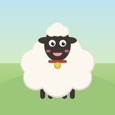

SheepishDatenschutz
Kurz gesagt
- Kein Benutzerkonto, keine Anmeldung, kein eigener Server.
- Spielstand, Leckerli und Einstellungen werden nur auf dem Gerät gespeichert.
- Werbung über Google AdMob, nur nicht-personalisiert. In der EU wird vorher nach Ihrer Einwilligung gefragt.
- Keine Abfrage nach App-Tracking-Transparenz, keine Nutzung der Werbe-ID (IDFA).
- Käufe laufen vollständig über Apple. Wir erhalten keine Zahlungsdaten.
- Nutzungsstatistik über TelemetryDeck, abschaltbar in der App.
Verantwortlich
André KochIm Schmittenhof 17
42899 Remscheid
E-Mail: cookisoft.studio@gmail.com
Telefon: +49 163 7399678
Die App
Wo Ihre Daten liegen: Sheepish hat kein Benutzerkonto, keine Anmeldung und keinen eigenen Server. Spielstand, gelöste Tagesrätsel, Bestzeiten, Leckerli und Einstellungen werden nur lokal auf dem Gerät gespeichert.
Werbung: Sheepish zeigt Werbung über Google AdMob, einen Dienst der Google Ireland Limited: Belohnungsvideos, die Sie freiwillig ansehen (zum Beispiel für einen Hinweis), und Zwischenwerbung zwischen zwei Rätseln. Die App fordert ausschließlich nicht-personalisierte Werbung an. Google erhält dafür Daten, um die Werbung auszuliefern, ihre Reichweite zu messen und vor Betrug zu schützen, unter anderem Ihre IP-Adresse, Informationen über Gerät und App sowie Ihre Interaktionen mit der Werbung. Mehr dazu bei Google: Wie Google Daten von Websites und Apps verwendet, die Google-Dienste nutzen.
Ihre Einwilligung: Auch für nicht-personalisierte Werbung werden Informationen auf Ihrem Gerät gespeichert oder ausgelesen, zum Beispiel um zu begrenzen, wie oft dieselbe Werbung erscheint, und für zusammengefasste Auswertungen. Dafür fragt die App in der EU vorher über den Einwilligungsdialog von Google (User Messaging Platform, UMP) nach Ihrer Einwilligung. Der Einwilligungsdialog ist Googles Standarddialog (IAB TCF) und nennt allgemeine Zwecke, unter anderem personalisierte Werbung. Sheepish fordert unabhängig von Ihrer Auswahl ausschließlich nicht-personalisierte Anzeigen an. Ohne diese Einwilligung liefert Google höchstens eingeschränkte Werbung aus, ohne Funktionen, die eine Kennung auf dem Gerät brauchen. Ihre Einwilligung können Sie jederzeit in der App unter „Einstellungen → Datenschutz-Einstellungen (Werbung)“ ändern.
Rechtsgrundlage: Für Werbung, in die Sie eingewilligt haben, ist Ihre Einwilligung die Rechtsgrundlage (Art. 6 Abs. 1 lit. a DSGVO); soweit dafür Informationen auf Ihrem Gerät gespeichert oder ausgelesen werden, ebenfalls Ihre Einwilligung (§ 25 Abs. 1 TDDDG). Sie können die Einwilligung jederzeit mit Wirkung für die Zukunft widerrufen, wie oben beschrieben.
Übermittlung in die USA: Google kann Daten auch in die USA übermitteln und dort verarbeiten. Einzelheiten nennt Google in seiner Datenschutzerklärung.
Werbe-ID: Die App fragt nicht nach App-Tracking-Transparenz und nutzt die Werbe-ID Ihres Geräts (IDFA) nicht.
Käufe: „Werbefrei“ und Leckerli-Pakete laufen vollständig über Apple. Wir erhalten keine Zahlungsdaten.
Ergebnis teilen: Wenn Sie Ihr Ergebnis teilen, öffnet die App das Teilen-Menü von iOS mit einem kurzen Text (Rätselnummer, Zeit, Hinweise). Was Sie damit tun, entscheiden Sie; die App sendet dabei nichts an uns.
Spielstand löschen: Die App löschen, alle Daten liegen nur auf dem Gerät. Käufe bleiben bei Apple und lassen sich im Hofladen über „Käufe wiederherstellen“ zurückholen.
Analyse: Wir setzen folgende Analyse-Dienste ein:
- TelemetryDeck (TelemetryDeck GmbH, Augsburg): Nutzungsstatistik, damit wir Rätsel und Schwierigkeit verbessern können. Die App meldet, wenn ein Rätsel gestartet, gelöst oder abgebrochen wird, wenn ein Hinweis genutzt, ein Ergebnis geteilt, ein Werbevideo angesehen oder ein Kauf abgeschlossen wird, jeweils mit Angaben wie Rätselnummer, Größe, Schwierigkeit und benötigter Zeit. Dazu kommen technische Angaben wie App- und iOS-Version und Gerätetyp sowie eine Kennung des Geräts, die nach Angaben von TelemetryDeck vor dem Senden unkenntlich gemacht (gehasht) wird. Die Statistik lässt sich in der App unter „Einstellungen → Nutzungsstatistik“ abschalten; dann werden keine Signale mehr gesendet. Datenschutzerklärung von TelemetryDeck
Was Apple uns gibt: Wenn auf dem Gerät „Mit App-Entwicklern teilen“ eingeschaltet ist (Einstellungen → Datenschutz & Sicherheit → Analyse & Verbesserungen), stellt Apple uns anonyme Absturz- und Nutzungsdaten bereit. Sie helfen uns, Fehler zu beheben.
Diese Webseite
Diese Seiten liegen bei GitHub Pages, einem Dienst von GitHub, Inc. (USA). Beim Aufruf verarbeitet GitHub technisch bedingt Daten wie Ihre IP-Adresse, um die Seiten auszuliefern und vor Missbrauch zu schützen. Darauf haben wir keinen Zugriff. Wir selbst erheben auf dieser Webseite keine Daten: keine Cookies, keine Skripte, keine Analyse, keine eingebundenen Inhalte von anderen Anbietern. Mehr dazu in der Datenschutzerklärung von GitHub.
Wenn Sie uns schreiben
Schreiben Sie uns eine E-Mail, nutzen wir Ihre Adresse und Ihre Nachricht nur, um zu antworten. Unser Postfach liegt bei Gmail (Google); Google verarbeitet die Nachrichten dafür.
Ihre Rechte
Sie haben das Recht auf Auskunft, Berichtigung, Löschung und Einschränkung der Verarbeitung Ihrer Daten sowie auf Widerspruch. Schreiben Sie uns dazu an cookisoft.studio@gmail.com. Sie können sich außerdem bei einer Datenschutz-Aufsichtsbehörde beschweren.
Stand: 24. November 2026